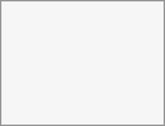

If the profile is enabled by your administrator, your profile data can be read by other users and guests. To control who can see which information, adjust the scopes mentioned above:
Private will only allow you and users you have added to your phone book in order to see the data.
Local and above will also allow guests to see your data!
To restrict the visibility further, you can prevent guests from seeing your profile data by changing the profile visibility to logged-in users. In your personal settings, find the profile visibility button:

This allows you to configure the visibility for each profile attribute: